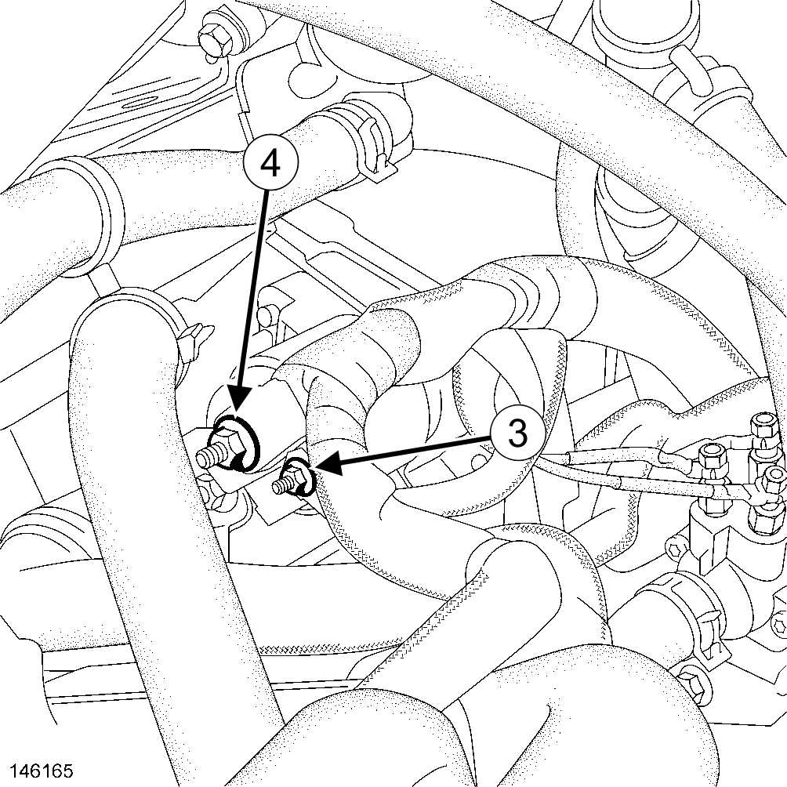
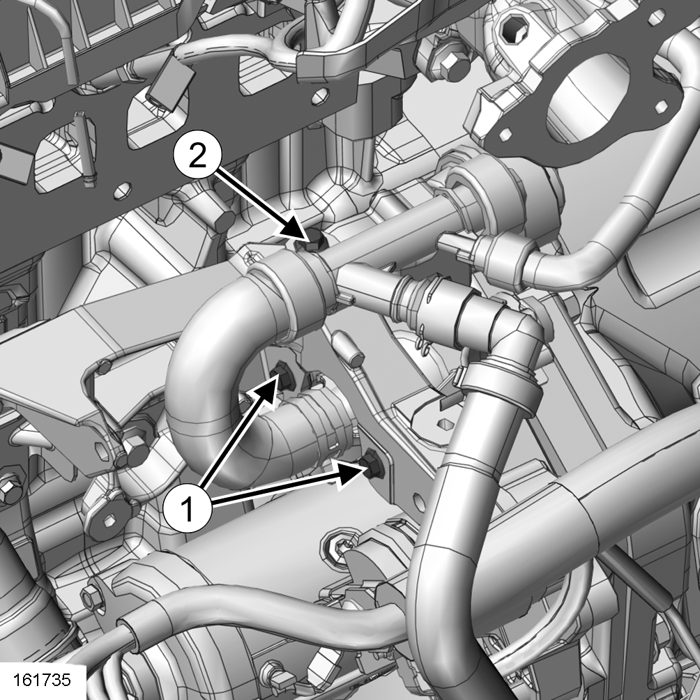
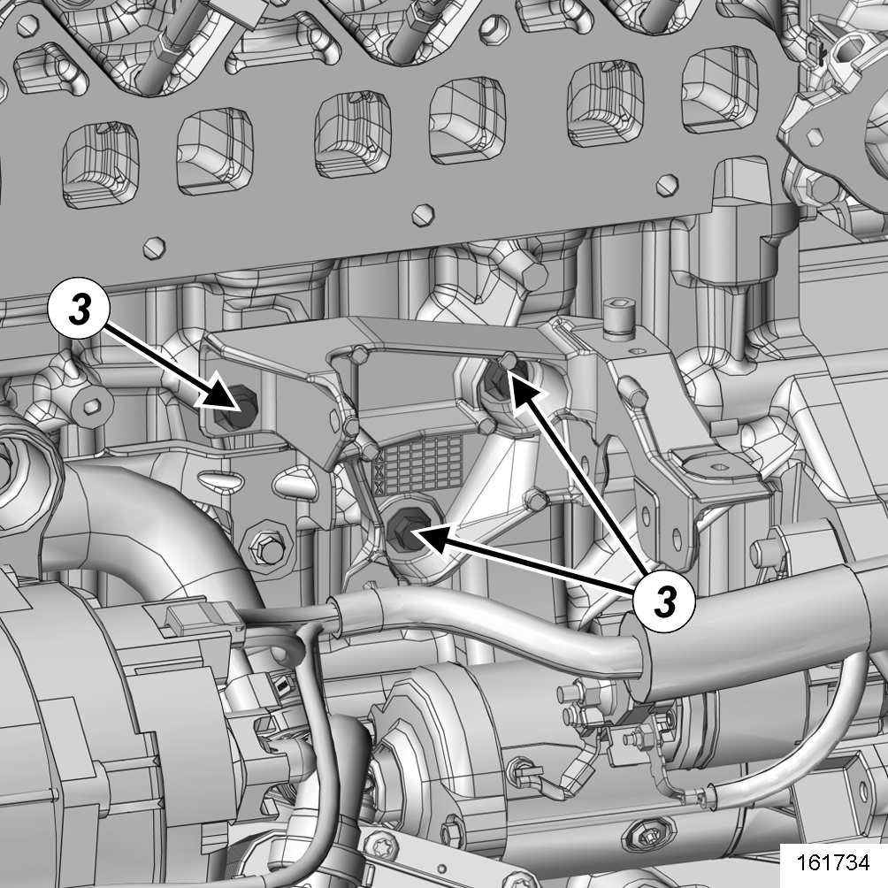
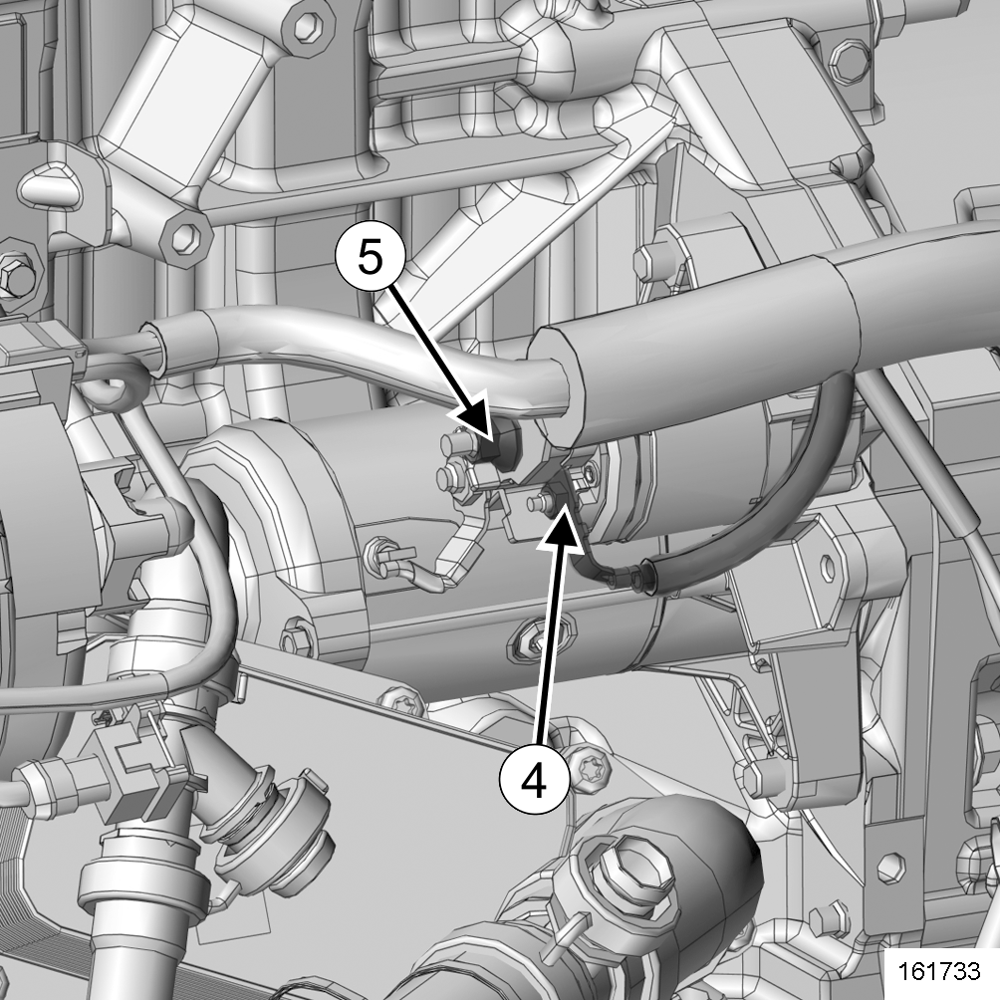
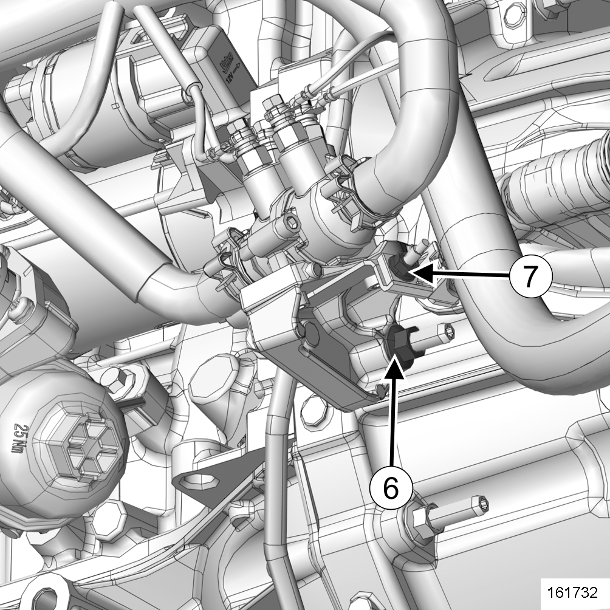
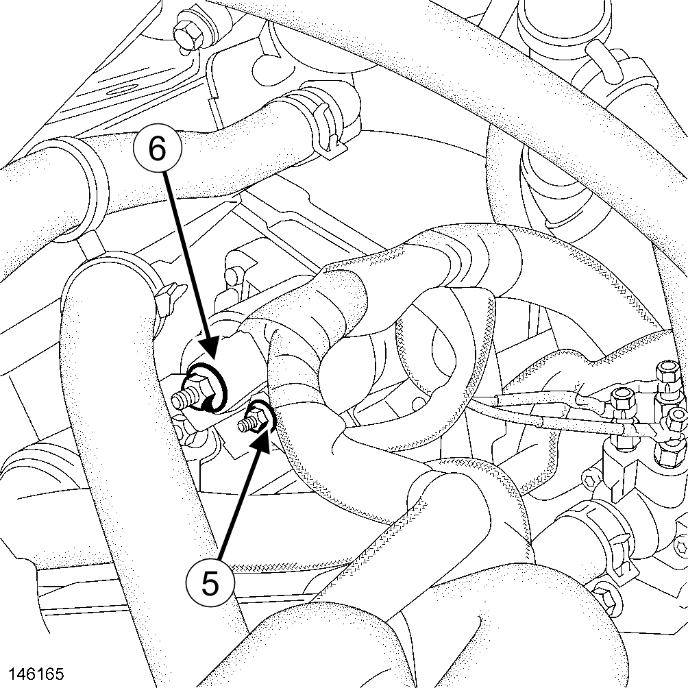
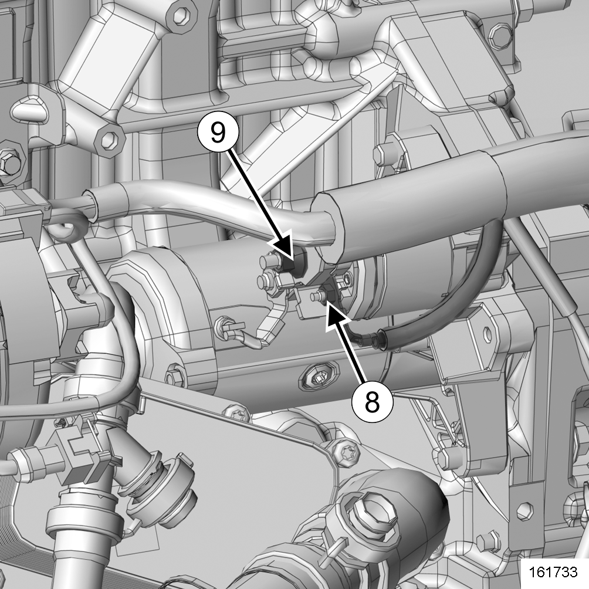

démarreur : dépose - repose
INTRODUCTION
| AVERTISSEMENT |
Avant toute intervention sur un véhicule équipé du système Stop&Start, appliquer impérativement les consignes de sécurité(voir, véhicule : précautions pour la réparation ).
Localisation et spécifications (couple de serrage, pièces à remplacer systématiquement ...)(voir, ensemble bas moteur : vue éclatée ).
dépose
préparation pour la dépose
- Mettre le véhicule sur un pont élévateur à deux colonnes(voir, véhicule : remorquage et levage )(02A, Moyens de levage).
- Débrancher la batterie(voir, batterie 12V : dépose - repose )(80A, Batterie).
- Déposer le carénage sous moteur.
préparation pour la dépose
préparation pour la dépose
- Déposer le tuyau(voir, ensemble d'admission d'air : vue éclatée )d’air en sortie d’échangeur air-air.
- Déposer(voir, ensemble circuit de recirculation des gaz d'échappement : vue éclatée ):
- le volet d'admission,
- le tuyau rigide de recirculation des gaz d’échappement en sortie de refroidisseur des gaz d’échappement,
- de la vanne de recirculation des gaz d’échappement,
- le capteur de température du circuit des gaz d'échappement,
- le répartiteur d’admission.
dépose
- Déposer .
- Écarter le câblage moteur.

- Déposer le démarreur(voir, ensemble bas moteur : vue éclatée ).
dépose
- Déclipper(voir, ensemble circuit de liquide de refroidissement : vue éclatée ):
- les tuyaux de liquide de refroidissement sur leur bride,
- le tuyau de commande de la vanne de commutation du circuit de refroidissement sur la bride de la vanne de commutation du circuit de refroidissement
- Déposer .
- Eloigner la vanne de commutation du circuit de refroidissement.

- Déposer .
- les vis de la bride de la vanne de commutation du circuit de refroidissement(3),
- la bride de la vanne de commutation du circuit de refroidissement.

- Déposer .
- Écarter le câblage moteur.

- Déposer .
- Écarter :
- le câblage moteur,
- le boîtier thermoplongeur et sa bride.

- Déposer(voir, ensemble bas moteur : vue éclatée ):
- les visdu démarreur,
- le démarreur.
repose
étape de préparation à la repose
- Vérifier la présence de la douille de centrage du démarreur.
étape de repose
- Reposer(voir, ensemble bas moteur : vue éclatée ):
- le démarreur,
- les vis du démarreur.
- Remettre en place les câbles de démarreur en respectant les positions ci-dessus :
| X62/M9T/ZA4,ZF4/686,690,692,694,696,698,882,890,892,896,898 |

- Remettre en place les câbles de démarreur en respectant les positions ci-dessus :
| X62/M9T/ZA4,ZF4/700 |

- Serrer aux couples de serrage :
- lesserrer au couple vis du démarreur à 44 N.m,
- l'serrer au couple écrou de borne d'excitation du démarreur à 5 N.m,
- l'serrer au couple écrou de la borne positive du démarreur à 8 N.m.
- Procéder dans le sens inverse de la réponse.